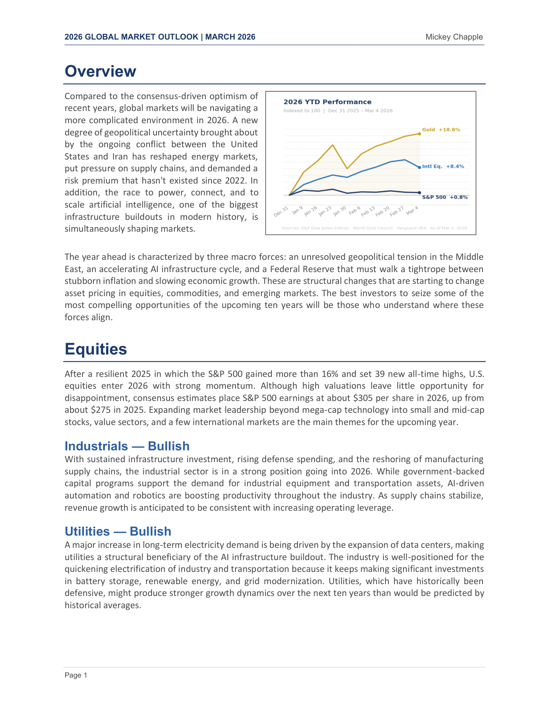

01 · Sole author
2026 Global Market Outlook
A three-page house view across equities, commodities, fixed income and emerging markets.

Page 1 of 3 · Open the PDFContext
Written in March 2026 for Delta Capital Markets, the student-managed fund I co-founded, to give our members a single coherent view to allocate against rather than a pile of competing headlines. It had to survive being disagreed with by people holding real positions.
Claim
It demonstrates that I can hold a macro thesis across asset classes and then commit to it. I organised the year around three forces — Middle East geopolitical risk, the AI infrastructure cycle, and a Fed caught between sticky inflation and a softening labour market — and took directional calls with stated reasoning: bullish industrials, gold, copper and crude; a steepening curve in fixed income; Brazil at 7.5x earnings with a Selic easing cycle beginning.
Reasoning
Writing it was the closest I have come to rehearsing the conversation I actually want to be in — explaining to someone, in language they can act on, why their portfolio is positioned the way it is. I also made myself name the thing that would break the whole view, stagflation, in the same document.